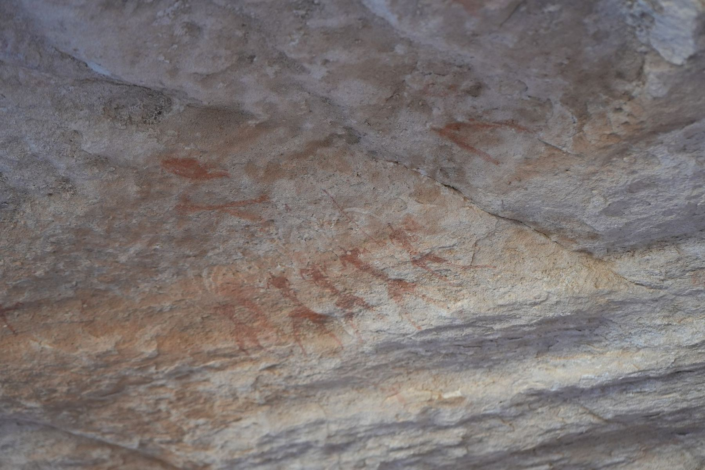
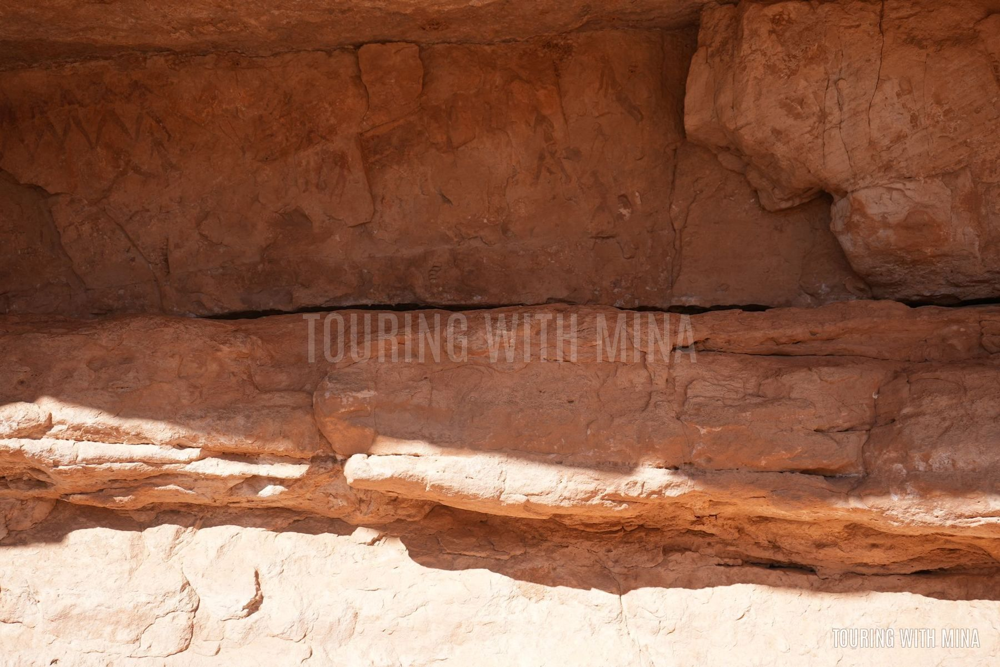
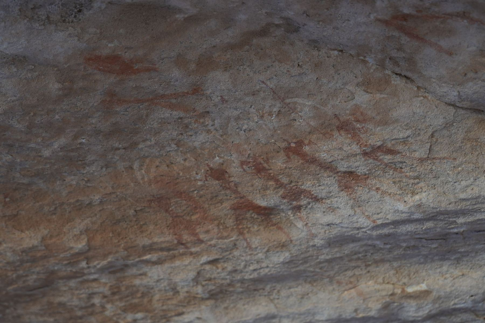
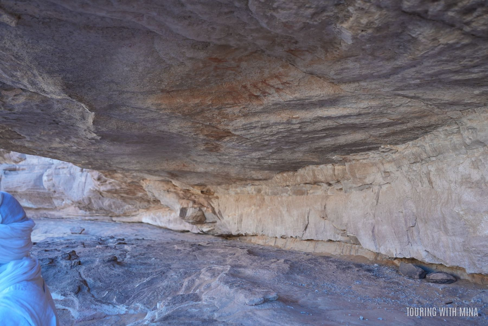
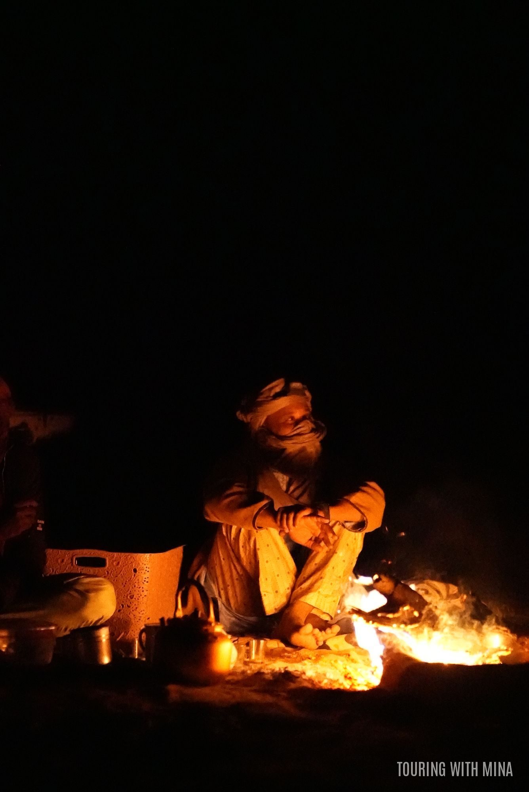

L'art rupestre du Tassili
Plus de 15 000 peintures et gravures, laissées sur la roche pendant près de 10 000 ans. Le plus grand musée à ciel ouvert du Sahara commence à Djanet.
Un livre d'histoire gravé dans la pierre
Le Tassili n'Ajjer est inscrit au patrimoine mondial de l'UNESCO depuis 1982. Sur ses parois de grès, les habitants du Sahara ont peint et gravé leur monde, d'environ 6000 ans avant notre ère jusqu'aux premiers siècles de notre ère.
Ces images racontent un Sahara vert : des hippopotames, des girafes, des troupeaux de bœufs et des scènes de chasse, à des endroits où il n'y a plus aujourd'hui que le sable et la roche. Elles montrent aussi les changements du climat et la façon dont les hommes s'y sont adaptés.
Avec nos guides, vous les découvrez sur place, à l'abri des rochers où elles ont été faites, avec les histoires qui les accompagnent.

Ce que racontent les parois
Les spécialistes distinguent plusieurs grandes périodes, chacune avec ses animaux et son style.
Les chasseurs
La grande faune sauvage : éléphants, girafes, rhinocéros, buffles. Surtout des gravures, souvent de grande taille.
Les Têtes rondes
Des personnages peints aux têtes arrondies, parfois immenses, dans des scènes encore mystérieuses.
Les pasteurs
Les troupeaux de bœufs et la vie du campement. La période la plus riche en peintures colorées.
Le cheval
Chevaux et chars apparaissent, avec des personnages stylisés.
Le dromadaire
Le Sahara devient aride. Le dromadaire arrive, accompagné des premiers signes de l'écriture tifinagh.
Sur nos circuits
Photos prises par Mina et nos voyageurs, lors de nos sorties.







Où les voir avec nous

La vache qui pleure
La gravure la plus célèbre de la région, à Adayk près de Djanet. Au programme du circuit Ihrir 7 jours et de la Tadrart Rouge 7 jours.
Voir le circuit
La Tadrart Rouge
Dans l'oued In Djerane, des gravures parmi les plus anciennes du Tassili, au milieu des dunes rouges.
Voir le circuit
Sefar et le plateau
Le trek du plateau du Tassili passe par les grandes fresques de Sefar, Tin Tazarift, In Tinen et Idjabaren.
Voir le circuitPourquoi le Sahara
Ce que les voyageurs viennent chercher à Djanet, et ce qu'ils en rapportent.

Le silence
Loin des villes et des écrans, le désert offre un calme qu'on ne trouve plus ailleurs. Beaucoup de voyageurs disent qu'ils y ont enfin déconnecté.

Les nuits étoilées
Aucune lumière à des kilomètres : la Voie lactée se voit à l'œil nu, depuis le bivouac.

Des paysages uniques
Forêts de roches, arches, dunes rouges et canyons. Des formes sculptées par le vent pendant des millions d'années.

10 000 ans d'histoire
Les peintures et gravures du Tassili, classées par l'UNESCO, se visitent sur nos circuits.

L'hospitalité touarègue
Le thé, la musique, les récits autour du feu : on partage le quotidien de ceux qui connaissent le désert.

Un hiver doux
D'octobre à avril, les journées sont agréables et la lumière superbe. La bonne saison pour partir.
Les regarder sans les abîmer
Ces œuvres ont traversé des milliers d'années. Quelques gestes simples suffisent pour qu'elles restent intactes.
- Ne pas toucher les peintures ni les gravures : la peau laisse du gras qui les efface.
- Ne jamais mouiller une paroi pour raviver les couleurs, cela les détruit.
- Photographier sans flash et ne rien prélever sur le site.
- Rester avec le guide : il connaît les sites et les règles du parc.
Votre voyage à Djanet commence par un message
Dites-nous vos dates et vos envies. Mina vous répond personnellement sous 24 heures.